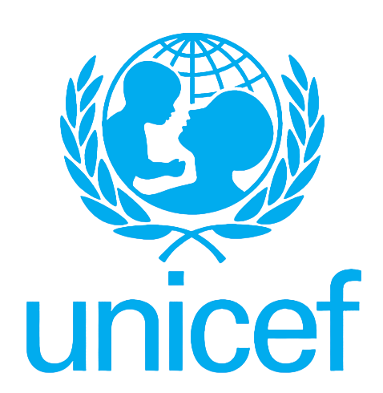
As I’ve gotten older, I’ve realized that I stay engaged only when I’m working on problems that demand a high level of intellectual challenge. While I could easily spend my free time doing something relaxing, I consistently choose the opposite, drawn to difficult problems that push my thinking and provide the mental stimulation I look forward to. This blog documents that search for challenge. In October 2025, while browsing various Vulnerability Disclosure Programs in my spare time, I struggled to settle on a target, much like choosing a meal in a crowded food court. Eventually, UNICEF’s VDP stood out. After reviewing the testing scope, I decided to focus there. If I found something, great. If not, I would simply move on.
One thing I learned from my past experiences and reconnaissance efforts is that many large organizations dealing with societal data tend to rely on some form of geographical mapping systems, whether for internal use or public-facing services. UNICEF is no exception.
My reconnaissance phase targeting UNICEF’s digital assets began with the usual Google dorks and subdomain enumeration on 28 October 2025 at around 3:00 PM. Leaked passwords? Leaked Social Security numbers or other sensitive credentials? None were publicly available. This was interesting, because it meant the challenge was starting to become real.
At that point, my perspective shifted. I asked myself: If I can’t extract data from them, can I give them unwanted or malicious data instead? This led me to think about file upload functionalities, especially in places where the average user should not be allowed to upload anything. This is where geographical mapping systems entered the picture.
To set the context, many organizations use ArcGIS, a geographic information system designed for working with maps and spatial data. Suspecting that UNICEF might be using ArcGIS as well, I crafted a Google dork specifically targeting their ArcGIS upload endpoints via FeatureServer.
site:*.unicef.* inurl:"/rest/services" intext:ArcGIS intext:upload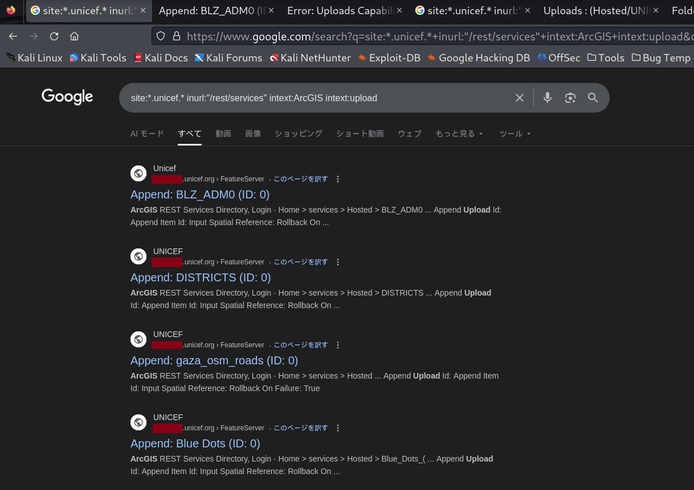
The results were promising. I identified several ArcGIS FeatureServer endpoints that potentially allowed unauthenticated data uploads. I began reviewing each result to determine whether unauthenticated uploads were actually permitted. For explanation purposes, I will use the first result from the image above.
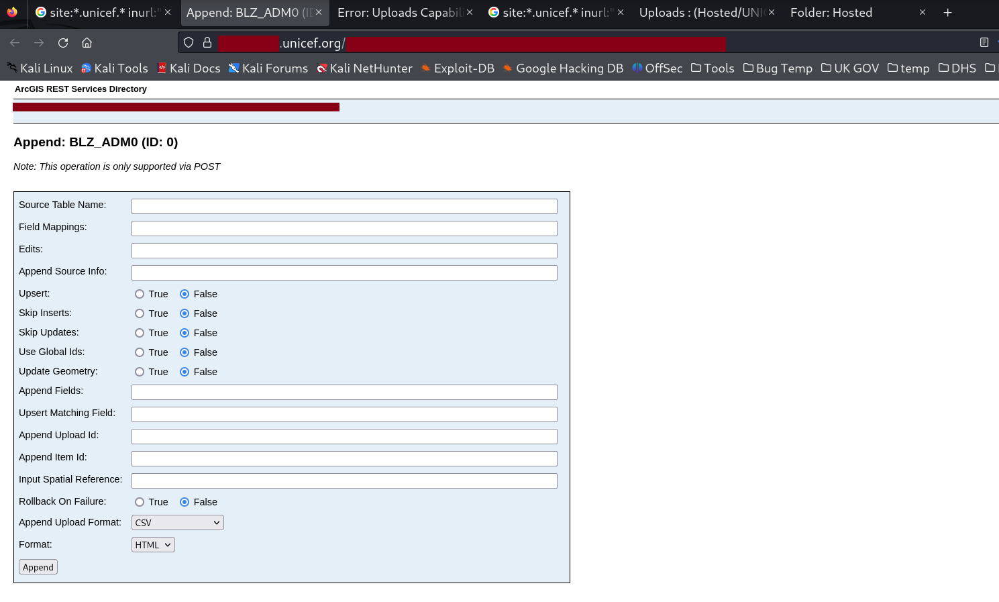
From the URL https://redacted.unicef.org/redacted/append, I replaced append with uploads to check whether unauthenticated uploads were even allowed in the first place.
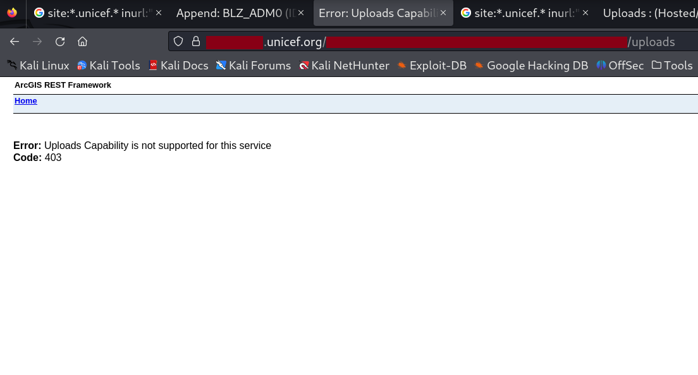
A 403 error was returned. This suggested that UNICEF was aware of this risk and had properly restricted unauthenticated uploads on their ArcGIS FeatureServer endpoints. At this point, a change in strategy was necessary. My guiding principle is that for large organizations, it is nearly impossible to secure every single data source and service. The sheer scale makes mistakes inevitable somewhere. With that in mind, I crafted a new Google dork. By now, it was already around 7:00 PM.
site:*.unicef.* inurl:"/FeatureServer/uploads" 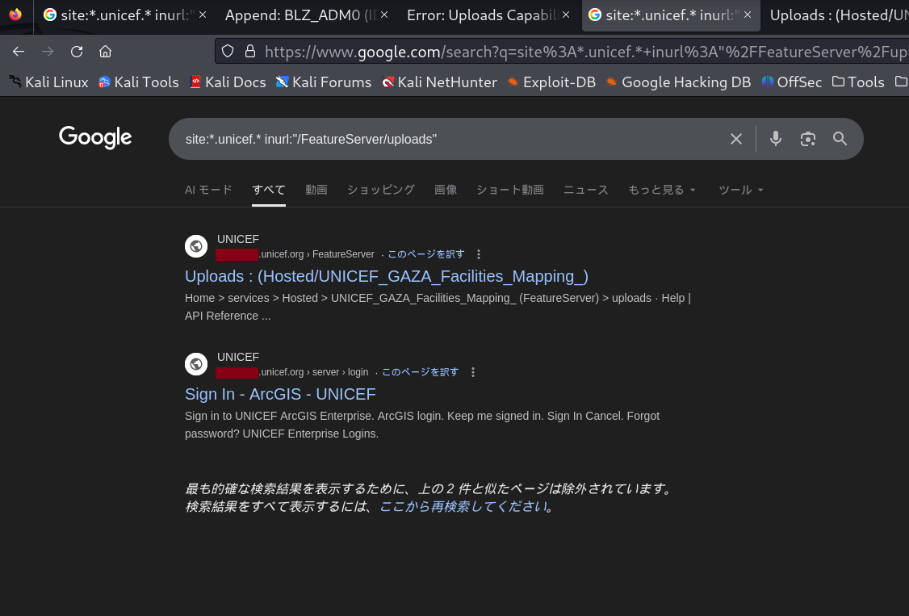
This time, the result was clear. A single unsecured endpoint surfaced immediately. I clicked the first relevant and vulnerable link, which led me to the following page.
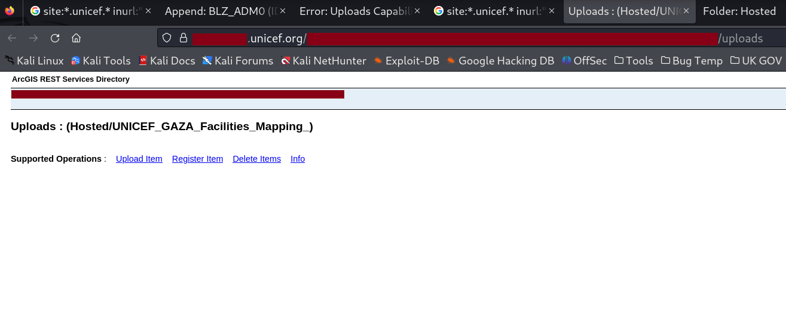
Take a close look at the image. Throughout this write-up, I’ve been discussing unauthenticated uploads, but did you notice that unauthenticated deletes were also possible? Without logging in as any user, I could delete geographical data remotely, from the comfort of my home, while eating a bag of chips. To further validate the upload capability, I tested it using a Proof-of-Concept (PoC) text file and filled in the item description to see whether the process would be blocked midway.
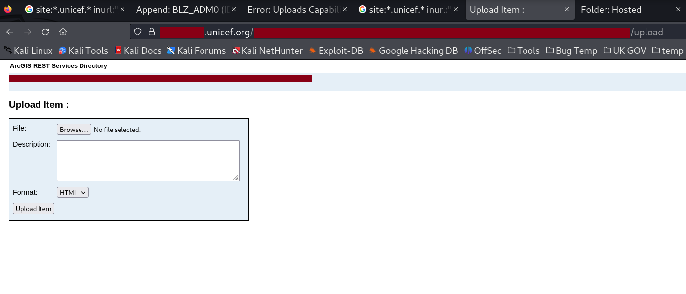
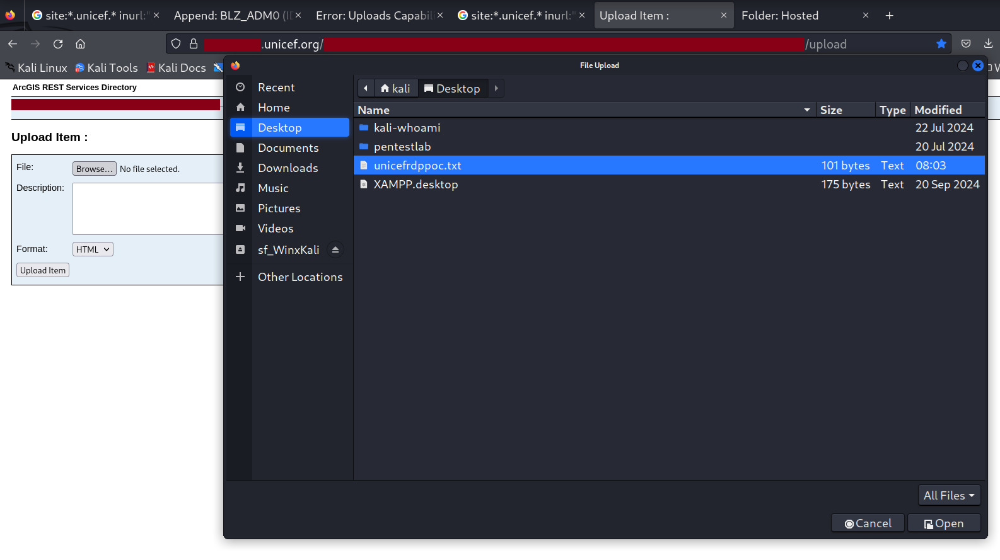
A successful upload resulted in a response containing the message “Committed: true”. The item ID generated during this process is important and should be noted.
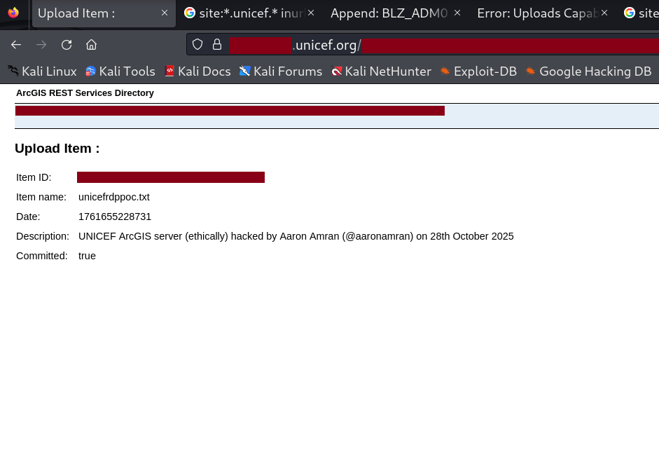
To verify that the upload was successful, I opened the item ID in a new browser tab to confirm that the file was indeed present on UNICEF's ArcGIS server.
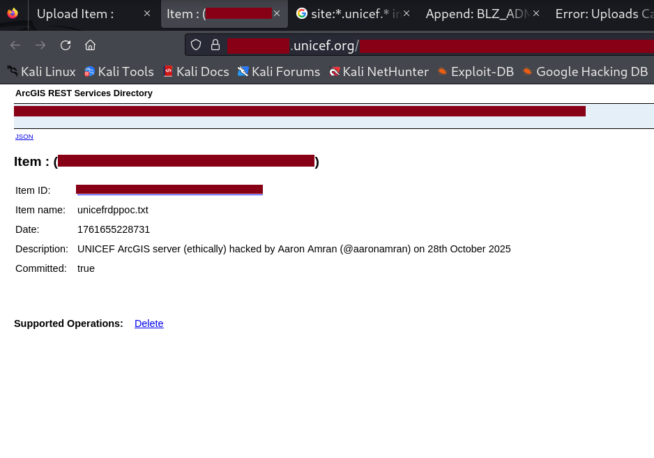
As an additional note, appending ?f=pjson to the end of the URL displays the item’s details in JSON format.
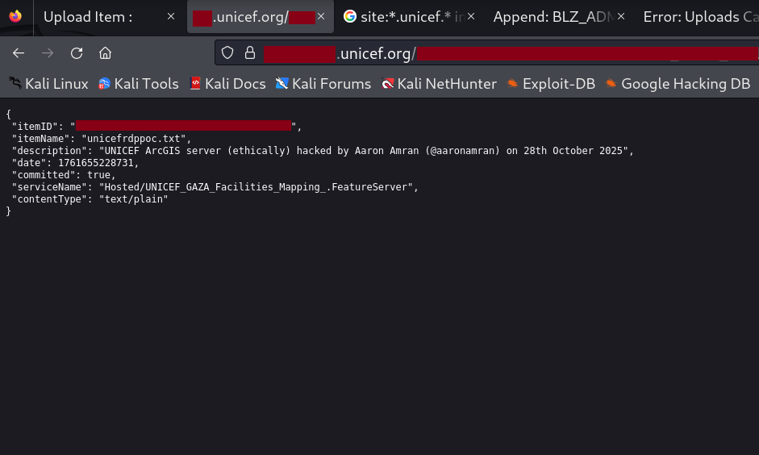
Once the main PoC testing was complete, I returned to delete the uploaded item. The server responded with: {"success": true}
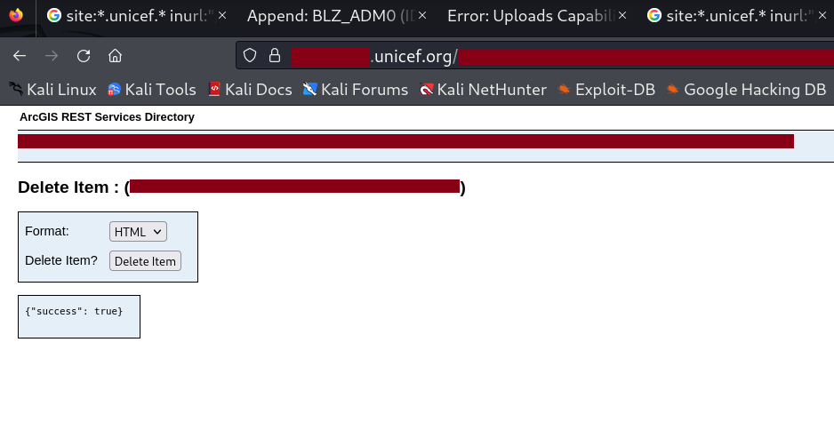
I then prepared an 11-page PDF report containing detailed findings and screenshots, which I submitted via email to infosecurity@unicef.org at 10:15 PM. The next morning, I checked my email as soon as I woke up, hoping for a response. There was none. I got ready for work and continued with my day as usual. Days turned into weeks, and weeks into months, without any reply. During that time, I continued hunting for security flaws in other organizations’ digital assets during my free time. Then, on 23 December 2025 at 11:58 PM, I finally received the following email:
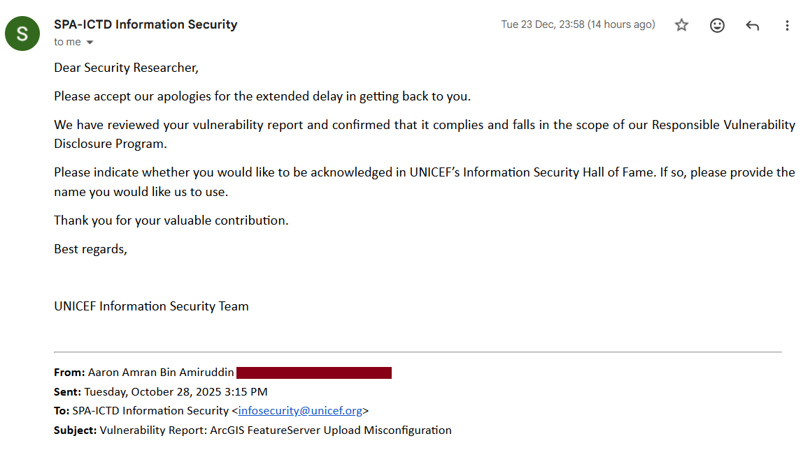
Either Santa Claus had been unusually generous in the year 2025, or I had been patient long enough to forget about the report and email entirely. Regardless, it was a pleasant surprise to finally receive a response after such a long wait. By 8 January 2026, I found myself wondering when the update regarding the UNICEF Information Security Hall of Fame would arrive. Driven by curiosity, I checked the website and found my name listed there. It turns out the email never came because they had already gone ahead and made it official. I was busy looking for an invitation to a party I was already attending.
See you in the next hack.
@aaronamran
January 2026